A small step
toward infinity.
Can a set of numbers be large enough to guarantee a pattern of any length? Explore the question. See what a proof actually checks.
Find your first patternFive primes. Equal gaps. One finite example.
IN SMALL WORDS
Pick positive whole numbers and add their fractions: 1/a₁ + 1/a₂ + 1/a₃ + … If that sum grows without a ceiling, must your set contain equally spaced numbers in every possible length?
Look for the rhythm.
Choose a set. Choose a length.
Every highlighted number is one equal step apart.
Use integers from 1 to 300. The “Explore up to” limit also applies to your set.
3 → 5 → 7
This is a finite window into an infinite question.
A finite experiment can find a pattern. It cannot establish divergence or prove a statement about every length.
Build a pattern of any length.
A formula can reach beyond the screen.
The scope of the formula still matters.
If a set contains every multiple of 3, we already know where to look.
For any positive length k, choose the first k positive multiples. They belong to the set, and their gaps are all 3. That proves the progression claim for this particular family.
For the full conjecture, the set can be much stranger. A divergent reciprocal sum does not hand us this formula.
3, 6, 9, 12, 15
The slider shows examples. The formula describes every positive length.
Ideas are cheap.
Checking is the work.
Lean is a very strict referee.
AutoLab packages the challenge and evaluates the climb.
- 01
AI proposes
A candidate proof and a precise mathematical claim.
- 02
Lean checks
The kernel checks each step against the formal statement.
- 03
Audit axioms
Reject proof gaps and unapproved assumptions.
- 04
Check scope
Does the proof establish the full hill or a special case?
- 05
Keep evidence
Save the source, commands, versions, and outcomes.
When a check fails, the error becomes the next input. Repeating the loop improves the attempt; it does not make a false claim true.
What does “machine-checked” actually mean?
A proof assistant checks whether a proof term establishes the exact proposition it is given. It cannot rescue a mismatched statement: proving something easier is still a proof of something easier.
For this AutoLab hill, the submission is only the proof after := in solution.lean. The hill supplies the statement and environment. The acceptance rule permits only propext, Classical.choice, and Quot.sound; a proof containing sorry does not qualify.
This page is an educational visualization. It does not run Lean or submit an AutoLab climb in your browser.
What we set out to do.
What we can claim.
One Sunday. An infinite problem.
At Sundai Hack 142 at Harvard Innovation Labs, the challenge was to explore recursive AI proof attempts and formal verification. Our target: Erdős Problem 3, represented as an AutoLab hill.
Find a proof—and measure the boundary.
The full task asks whether every set of positive integers with a divergent reciprocal sum contains arithmetic progressions of every finite length. We also investigate smaller, clearly stated claims that can be checked locally.
Split the work. Keep one standard of evidence.
Inspect the fixed formal statement, explore mathematical routes, write Lean proofs for scoped results, and verify the artifacts. Parallel work separates research, implementation, and review; the verification step joins them.
The exact problem is now reduced to one counting question. It remains open.
Lean checks that the full problem is equivalent to a counting statement: sets avoiding a fixed pattern length must thin out fast enough across doubled ranges. For patterns of length four or more, the best published counting bounds are not yet strong enough.
Lean 4.33.1 checked 64 supporting declarations in the pinned image, including the equivalence with the verbatim hill statement. All axiom audits passed. The counting bound remains unproved. No Erdős 3 proof or score is claimed; the separate equivalence hill passed on AutoLab.
Read the verification record ↗Inspect the Lean source ↗Read the full-proof attempt ↗
Where the proof stops.
Lean now checks both directions. If the counts in each doubled range are small enough, the fractions add to a finite total. Conversely, if the full problem is true, the counts must be that small. So the problem is exactly this: does the largest pattern-free set in {1,…,N}, divided by N, shrink fast enough along N = 2, 4, 8, … for the series to converge? For length three, yes. For length four, the best published bound shrinks like 1/(log N)ᶜ; convergence needs c greater than 1, and the known c is small. A checked “if and only if” still does not prove either side.

Two research agents tested cross-scale estimates and induction on pattern length; a third reviewed their arguments. They rejected two shortcuts with explicit counterexamples. Six Lean agents then formalized the surviving equivalence, and a fixed checker graded each one against frozen statements. Lean now checks 64 declarations. The counting estimate itself remains open. Read the equivalence and its sources ↗ See the equivalence hill on AutoLab ↗